前言
主题已经发布有半年之久才开始写使用手册，实在是抱歉各位！！！但相较于写使用文档，果然我还是更喜欢摸鱼~
本主题较复杂，因此上手略难一些，本次特意在珍贵的元旦假期内写出此篇文档，以便于帮助大家更好的上手此主题。
另外如果对主题有任何使用上的困惑，可以查看此文档或留言博主。
开始
①安装 Halo CMS系统
此处就不进行赘述了，相关文章实在是太多了。
可以参考如下文章帮助你快速开始
https://docs.halo.run/zh/install/linux
②安装 Sakura 主题
目前有离线安装及在线安装两种方式，推荐离线安装方式。
离线安装
下载主题
目前可以从 Github 上下载 Sakura 主题。
链接：https://github.com/LIlGG/halo-theme-sakura
建议下载发行版即可。下载完成之后为 .zip 文件。
安装主题
进入 Halo 后台，点击导航菜单的外观选项
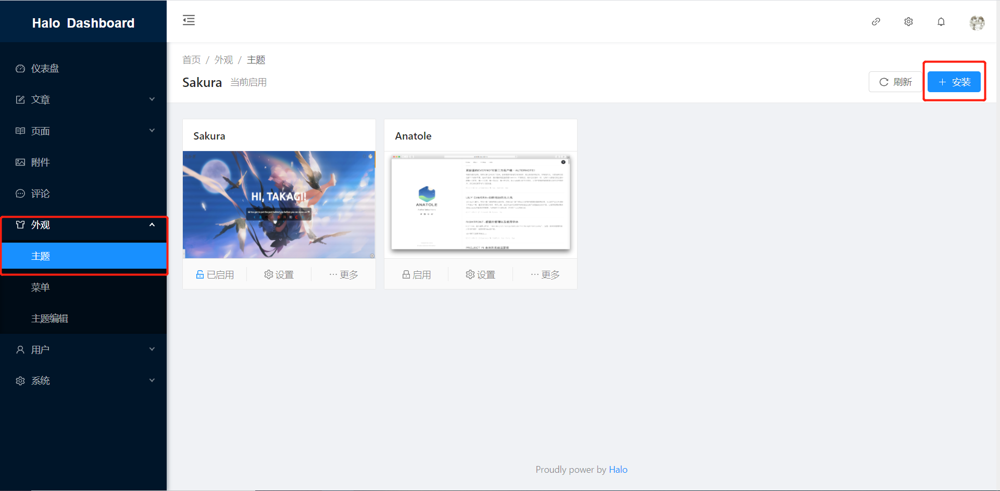
点击主题标题最右侧的 “安装”
在弹出的 “安装主题” 对话框中，选择“本地上传”并使用 .ZIP 格式的主题压缩包即可自动安装主题。
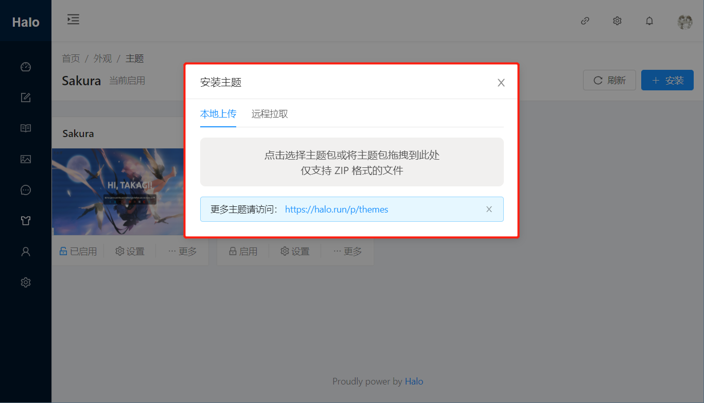
在线安装
在线安装无须下载压缩包。同样的，在 Halo 的后台，选择导航栏的外观选项，然后点击主题标题最右侧的 “安装”。
不同于离线安装的是，在线安装时，在弹出的“安装主题”对话框中，需要选择“远程拉取”，如下

先填写 Github 仓库地址为 Sakura 主题的地址：https://github.com/LIlGG/halo-theme-sakura。
之后选择“获取版本”，建议使用发行版。如下图

下载即可！
【在线安装可能不稳定，比较建议使用离线安装！另外如果使用者修改了主题，将会导致无法更新主题，需要特别注意！】
了解 Sakura 主题
本主题提供了较多的自定义选项，建议在使用主题之前，仔细阅读本教程，可以帮助你更好的使用它。
主题功能
丰富的后台配置项
本主题提供了各种位置的配置项，方便用户自定义主题。【配置项大多数是以功能区域来划分】
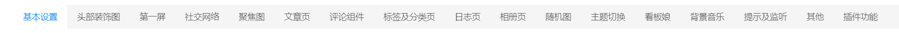
对于一般用户而言，使用默认的主题配置已经足够。但也可以根据自己的需求调整配置。
首页故障文本和头像
主题首页支持故障文本与头像两种方式。如下图为故障文本
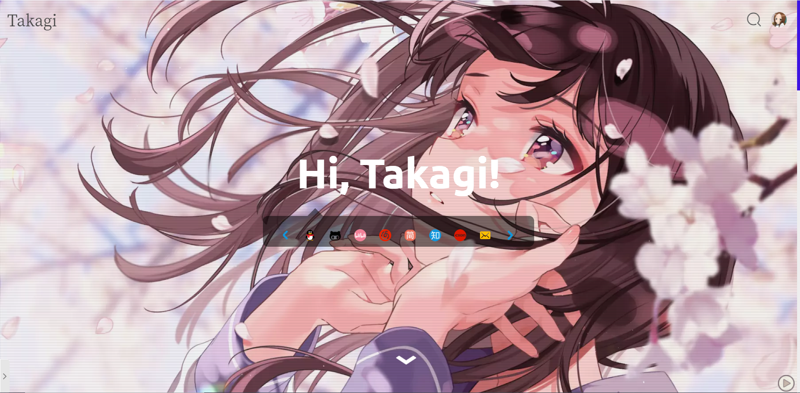
若你想改变首页显示，则可以在主题配置的“第一屏”中找到。
首页背景视频
主题支持首页背景视频，且在 1.3.0 版本之后，将使用个人 API 提供流视频（流视频指无论多大的视频，都能无加载立即播放，之后边播放边缓存的视频播放方式）的功能。当然也支持本地 MP4 格式的视频。并且当用户填写了流视频又填写了本地视频之后，将优先播放本地视频。
※ 流视频首次加载可能出现卡顿或者直接停止播放的现象，属于正常情况，可以过段时间再尝试
如需进行背景视频相关设置，可在主题配置的 “第一屏” 中找到对应的配置项
多级菜单及菜单图标
多级菜单
当前主题支持多级菜单。多级菜单需要在 Halo 后台 “外观 -> 菜单” 中添加。
【注：主题在设计阶段，父菜单无论是否有子菜单都可以设置单独的跳转链接，如果不想让父菜单跳转，那么设置父菜单的链接地址为 # 即可】
halo 1.4.2 版本之前，可以在编辑里面选中父级菜单即可。
halo 1.4.2 版本之后，将支持菜单拖拽为子菜单，如下图所示
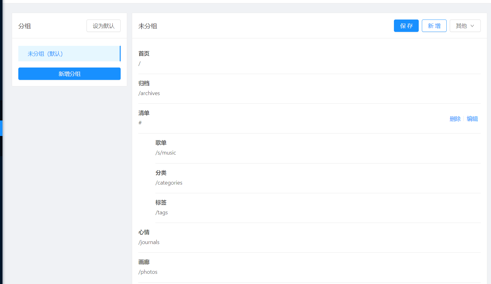
菜单图标
默认支持 fontawesome 图标，如果想增加菜单图标，需要在编辑菜单时，在图标一行，写上对应的图标代码。例如
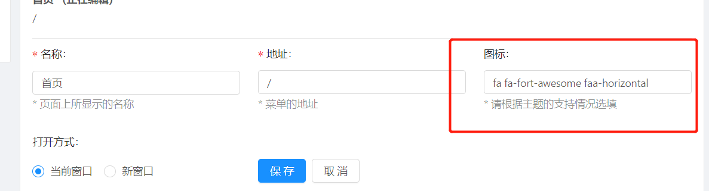
图标代码如下：
fa fa-fort-awesome faa-horizontal
其中 fa 必须存在，代表其为 fontawesome 图标。
fa-fort-awesome 为对应的字体图标名称，可以前往 http://www.fontawesome.com.cn/cheatsheet/ 获取
faa-horizontal 代表鼠标移入时的动画效果，可以前往 https://www.51qianduan.com/article/view/4111.html 查看具体演示
随机图
在主题 1.3.0 版本之后，主题将支持随机图，随机图 API 将采用个人 API 提供服务。
如何使用
随机封面图默认开启，如需关闭请在主题设置中的 “随机图” 中关闭即可。
随机首页图默认关闭，如需开启请在主题设置中的 “随机图” 中开启即可。
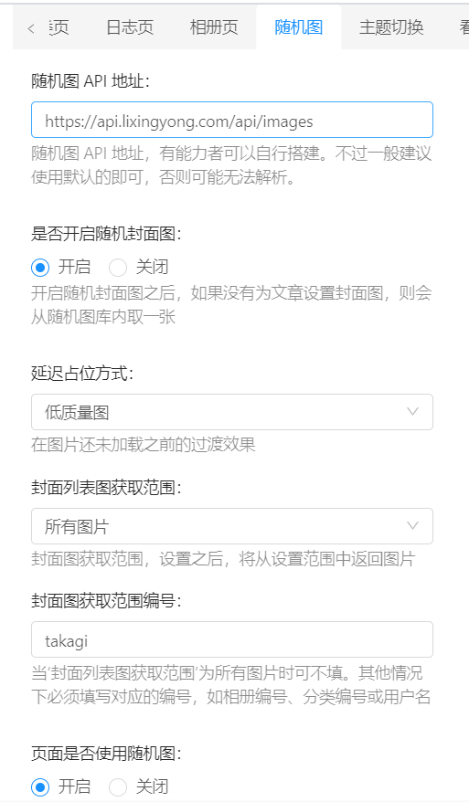
【如果使用者已经为某文章/页面 设置过封面图，将优先使用设置的封面图】
随机图获取范围及编号
随机图 API 使用的所有图片，由个人画廊提供：https://view.lixingyong.com/ 。 随机图支持用户切换图片选取范围，可以根据个人需要进行选择，默认从画廊中所有公开图片中随机选择。【私密图片或私密账号无法获取到】
个人画廊支持用户自定义上传图片，创建相册等，如需要添加个人图片入库，可以前往 https://view.lixingyong.com/ 注册账号进行上传。入库数据非及时生效，需要 0 ~ 30 分钟的时间进行更新，关于入库数据的生效时间及其他注意事项，可以查看 [API开发（二）随机图片 API 设计思路](https://lixingyong.com/2020/10/21/%E9%9A%8F%E6%9C%BA%E5%9B%BE%E7%89%87api)
获取范围为用户
当随机图获取范围为 “用户” 时，API 接口将会在某个用户下选择图片。此时，需要在范围编号中填写此用户的用户名。
可以前往 https://view.lixingyong.com/explore/recent/?list=users&sort=date_desc 来查看想要获取图片的用户名。如下所示
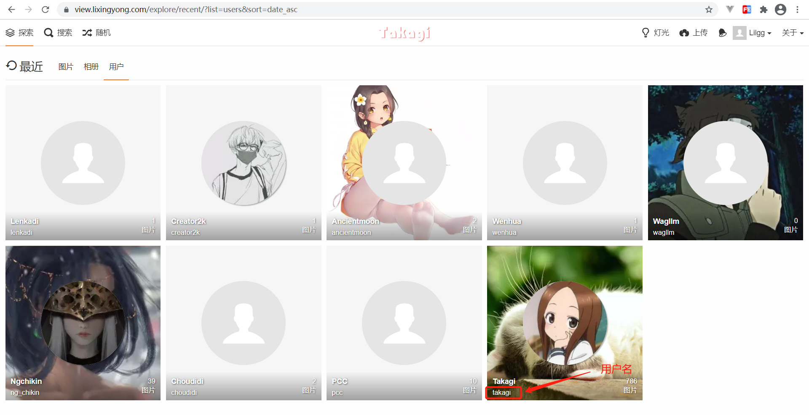
需要注意的是，用户名为 小写英文字母 + 下划线 + 数字 的组合。
获取范围为分类
当随机图获取范围为 “分类” 时，API 接口将会在某个分类下选择图片。此时，需要在范围编号中填写分类名。
对应分类名可以点击“探索”菜单中对应的分类来获得。
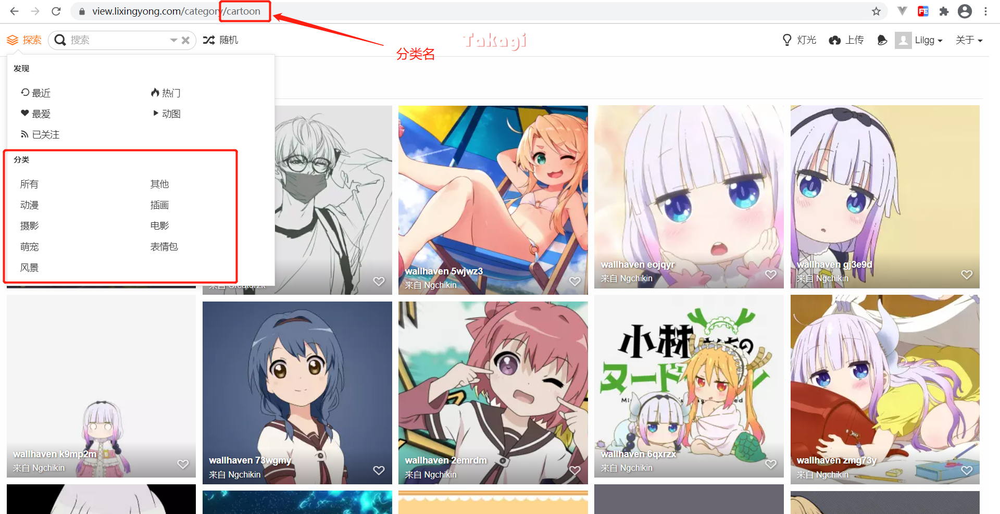
获取范围为相册
当随机图获取范围为 “相册” 时，API 接口将会在某个相册下选择图片。此时，需要在范围编号中填写相册编号。
可以前往 https://view.lixingyong.com/explore/recent/?list=albums&sort=date_desc&page=1 下来查看其他网友贡献的相册。
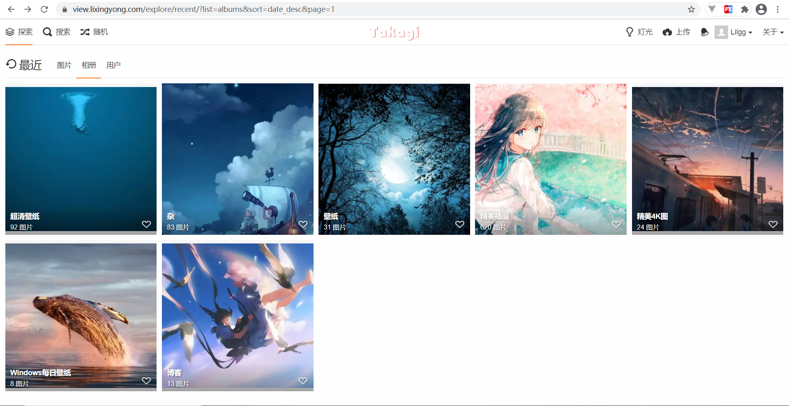
之后，可以点击某个具体的相册来查看相册编号，例如查看 “精美插图” 的编号
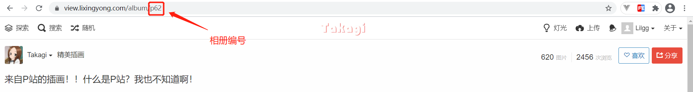
关闭页面/文章随机图
若开启随机图之后，但对于某个文章/页面不想使用随机图，则可以在发布时，使用 元数据 的方式来取消。
如下所示
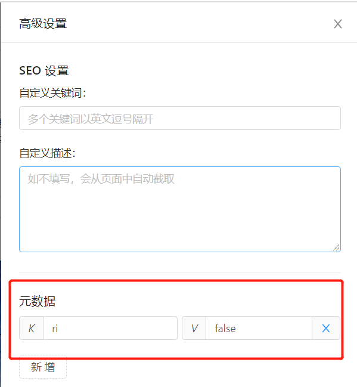
K 必须为 ri，代表为随机图的元数据。 V 必须为 true 或 false，否则会报错！
夜间模式
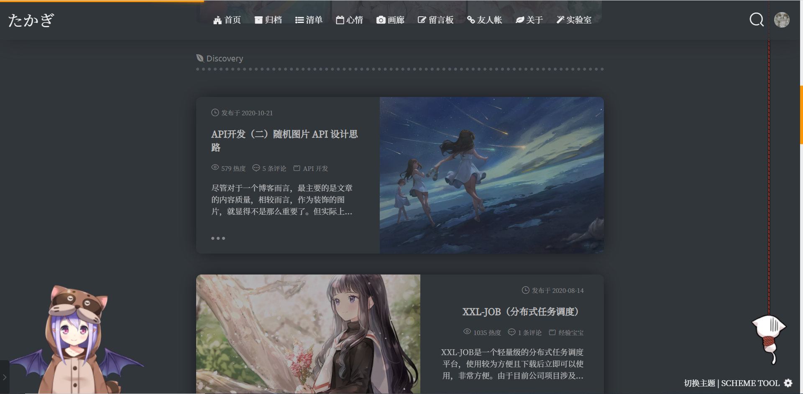
本主题支持夜间模式，在页面的右下角可以切换夜间模式及白天模式。也可以在主题设置的“主题切换”内，设置默认主题及关闭主题切换功能等。
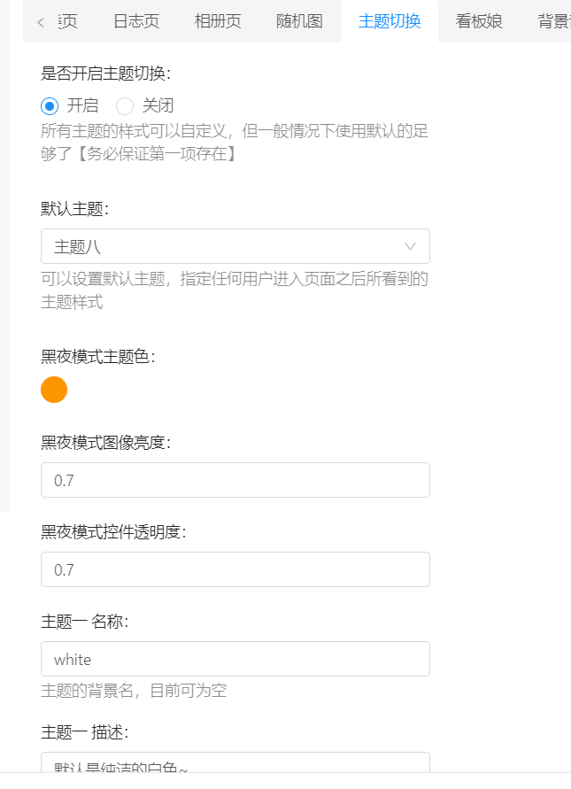
心情页
-41bb81f088f34406988c926812b17eab.png)
本主题提供了额外的日志页面。需要使用的可以在 Halo 后台增加心情菜单 /journals 来使用。
对于日志页面的主题配置，需要在主题设置的 “日志页” 中去控制。
-dd5d53f5a64e4b78a2d22d87c41eeeaa.png)
图库页
-b017b173835c4743a84365a804f02e7e.png)
本主题提供了图库页面。需要使用的可以在 Halo 后台增加图库菜单 /photos 来访问。图片需要在 Halo 后台进行配置。
特别的，本主题预设了多种展现图片的形式，比较推荐使用瀑布流。可以在主题设置的“相册页”进行配置
-4f295005cdbb45518b4e75317238f0d7.png)
友链自定义页面
由于 Halo 自带的友链界面，无法在最开始写上自己想说的话，因此本主题额外提供了一个友链的自定义页面供大家使用。
-013e095fecf44ddc9a09f37cfed09ccf.png)
需要使用的，可以在 Halo 后台的自定义页面，新建一个任意的自定义页面。在发布时，选择“自定义模板”为 links 即可。如下所示：
-11993110b48a4f2aa63bd3a4f4bfcefd.png)
文章及页面目录
本主题默认对所有文章及自定义页面内容启用 TOC 目录。具体效果如下
-d104747f7134402390c36597cde6f19c.png)
尽管是对所有页面和自定义页面都生效，但可以采用在后台发布文章、页面时，增加 元数据 的方式，来规定某个页面或文章不使用目录。
-e6717747728c46b499ab4e01b1bf65aa.png)
其中元数据的 K 必须为 toc，而 V 只能为 true 或者 false，否则将产生错误。
若想针对于目录的全局配置，则可以在主题配置的 -> 文章页 进行修改。
目录展开级别
本主题中，目录的展开级别是可以调整的，对于全局的目录级别，可以前往主题设置 -> 文章页 -> 目录标题展开级别 进行设置。
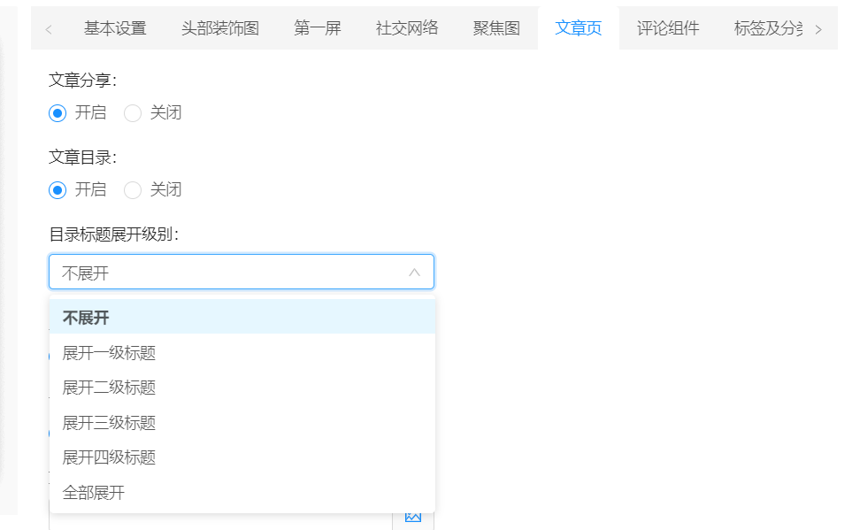
另外的，如果想对单独的文章/页面设置目录级别，则可以在发布文章、页面时，使用元数据 的方式来定义其目录级别。【为文章、页面设置的目录级别优先级高于全局设置】
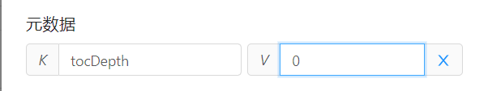
其中元数据的 K 必须为 tocDepth, 而 V 需要为 0 - 5 分别对应主题设置 -> 文章页 -> 目录标题展开级别从上到下的等级。
代码高亮
本主题强制启用代码块高亮功能，并默认提供了七种代码高亮风格供使用。可以在主题设置的“文章页”中进行更换。
-89e6ea828ff54032ad563cb09635f6f9.png)
尽管主题启用了自动语言检测的功能，但还是建议使用者在编写 Markdown 的时候，对代码块录入对应的语法名称。如
```js
```
类 Mac 风格代码块
本主题使用 Mac 风格代码块，并且可以对代码进行一键复制。【也可以放大哦】
-824f8e8f59014a098e28f3bc96c5b48d.png)
标签云、标签颜色自定义
本主题支持标签云及标签颜色随机自定义。如果不需要可以进入主题设置“标签及分类页”中进行修改
-3f528bb8309e42d2a63c80fc5a3f691f.png)
分类雷达
本主题支持分类雷达及分类颜色随机自定义。如果不需要可以进入主题设置“标签及分类页”进行修改
-1b70d2bab64e4fd0ba512adab7d6acda.png)
邮件模板自定义
-921d262939a94c3fbe63686f9a214825.png)
自定义头部图片
在主题设置 - 其他 - 邮件回复模块图片 中修改。
静态资源本地/云端切换
在 1.3.0 版本之后，静态资源支持本地或云端两种读取方式。如用户对本地静态资源文件有所替换，则建议使用本地资源。默认将采用云端资源。
需要更改的用户，可以前往主题设置“其他”内的“资源使用 CDN” 进行更换
插件功能
由于 Halo 暂时没有插件功能，因此前端只能采用约定大于配置的方式，来实现伪插件的功能。本主题定义了几种常用的插件，用来完善主题功能。
评论组件
本主题使用的是定制化的评论组件，组件地址：https://github.com/LIlGG/halo-comment-sakura
但实际上主题并不限制使用哪个评论组件，如果有更换的需求，可以在主题设置的“评论组件”中，修改评论模块 JS 来更换。
如下为当前的评论组件，支持各种小表情。
-714f6453b7a749c2b56c129a2116829f.png)
评论组件仅支持 markdown 格式
【注：目前评论组件暂无什么额外配置，后续还需要进行部分改动】
音乐插件
本主题采用 aplayer.js 作为音乐的基础插件，搭配 个人 API 实现背景音乐功能。默认关闭，如需开启，则需要前往主题设置中的“插件功能”，打开“开启 aplayer 插件”的功能。
额外的，如果还想要开启左下角的浮动背景音乐，则还需要前往主题设置中的“背景音乐”配置启用。
-15c975e71abb484385b65f28619873c4.png)
如何在文章/页面内增加音乐列表？？
-58f0831faa6944729f187ca3fba48140.png)
在文章/页面内增加音乐列表，需要至少开启主题设置中的“插件功能 - 开启 aplayer功能”。开启之后，在页面中想要插入音乐的地方，复制如下 HTML 即可。
<div
id="aplayer"
style="z-index: 100;"
class="aplayer"
data-id="2638142102"
data-server="netease"
data-type="playlist"
data-fixed="false"
data-preload="auto"
data-order="list"
data-autoplay="false"
data-theme="orange">
</div>
data-id：歌单 ID。目前只支持歌单
data-server：歌曲提供服务地，目前只支持网易云，即 netease
data-type：目标 ID 类型，目前只支持歌单，即 playlist
data-fixed：是否为吸底模式，页内的都要为 false
data-preload：是否自动加载，看需求通常选择 none：不自动加载 或 auto：自动加载
data-order：循环方式，可以有下面几种。list：顺序，random：随机
data-theme：主题颜色。
data-autoplay：是否自动播放
其他 aplayer 配置可以查看 https://aplayer.js.org/#/home?id=options
可以使用 data- 来传入任何 aplayer 支持的属性
看板娘
本主题默认集成了看板娘功能，但对其原版功能未做大的改动。具体可以查看 https://github.com/LIlGG/halo-live2d
-a2115ba884f24ce694dbd0553d5ee7bf.png)
默认会关闭看板娘，开启看板娘会占用一部分内存，根据需求前往 插件功能 -> 开启 Live2D 插件进行开启。为了移动端的流畅功能，移动端将自动禁用看板娘功能，望理解！
可以前往主题设置中的“看板娘”以及“插件功能”，来设置看板娘的所有功能。
数学公式
应用户要求，在 1.3.0 版本之后，系统将集成 Mathjax 用来渲染数学公式，但数学公式需要加载多个耗费资源的 JS，考虑到不是人人都需要，因此默认关闭。
若有相应的需求，可以前往 “主题设置 -> 插件功能 -> 开启 Mathjax 数学公式插件” 中进行开启/关闭操作。另外在 1.3.1 版本之后，还需要在文章，元数据中填写 K -> math V -> true 来开启对应文章的 Mathjax，否则即便开启全局 Mathjax 也不会生效
国际化
在 1.3.0 版本之后，主题增加了前端国际化功能，用来根据用户的不同需求，展示不同的语言。
国际化功能默认强制开启，但可以根据需求设置语言，默认自动。用户可前往 “主题设置 -> 其他 -> 主题语言” 中进行修改
如果用户想增加/修改国际化语言字段，请查阅国际化文档。
与原版主题的说明
本主题的原版主题，为 WordPress 上的 Sakura 主题。十分感谢 mashirozx 大佬制作如此漂亮的主题，让我等“有机可乘”，非常感谢！
不过目前本版主题除了样式部分，其他地方却与原主题完全不一致。因为后续的功能，基本都属于参照原主题的样式从零编写的。因而大家会发现，在功能、样式等方面或多或少有一些差距。
我希望做到的是，站在巨人的肩膀上，将主题做的更好，更完善，尽管目前来说不如原主题。但我还是会尽自己最大的努力做好本主题，至少不让前辈蒙羞！
希望各位大大能够给个 star，你们的支持是我最大的动力~
https://github.com/LIlGG/halo-theme-sakura
Q.E.D.